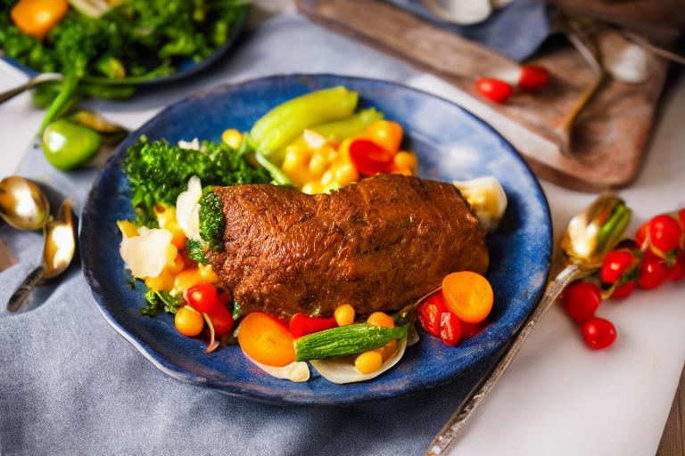
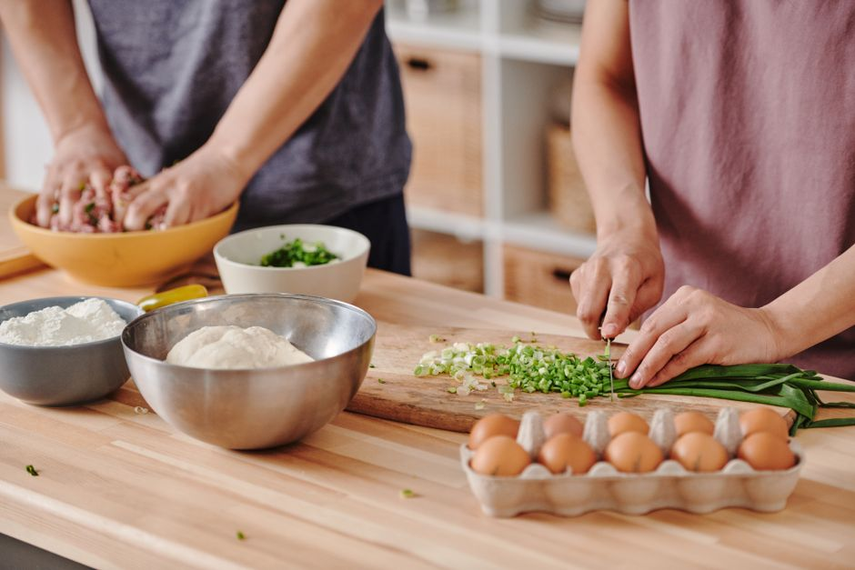

Conseils pour cuisiner en masse et réduire les coûts alimentaires

Conseils pratiques pour cuisiner en masse et réduire les coûts alimentaires
Pour les étudiants cherchant à mener une vie étudiante économique, la cuisine en masse est une excellente façon de préparer des repas sains et économiques. Voici quelques conseils pratiques pour optimiser votre processus de cuisine et réduire vos coûts alimentaires.
Séparer la préparation et la cuisson

Photo: ShotPot / Pexels
Commencez par bien planifier vos repas. Préparez une liste de courses hebdomadaire pour éviter les achats inutiles. Par exemple, préparez vos légumes pour la semaine durant une seule séance le lundi soir. Utilisez un couteau, un épluche-léger et un couteau de découpe pour éplucher et couper vos ingrédients en un temps record. Cela vous permettra de gagner en efficacité et de réduire le gaspillage.
Achetez des ingrédients en vrac
L'achat de produits en vrac est un moyen rapide et efficace de réduire vos coûts. Par exemple, achetez vos grains de café en vrac plutôt que des paquets pré-emballés. Cela vous permet de contrôler la quantité exacte que vous achetez et d'éviter les gaspillages.
Faites des achats à l'unité
Lorsque vous achetez des produits frais, optez pour les unités au lieu des boîtes ou des sachets. Par exemple, un kilogramme de poireaux coûte moins cher que des sachets de 200 grammes. Cela peut réduire vos coûts globaux de 20% à 30% par mois.
Achetez des légumes et fruits en saison
Les produits frais en saison sont généralement moins chers et plus nutritifs. Par exemple, les pommes de terre et les carottes sont généralement moins chères en hiver. Évitez les produits importés qui peuvent augmenter le coût de votre alimentation.
Faites vos achats à la dernière minute
Si vous achetez vos courses à la dernière minute, vous pouvez profiter des réductions spéciales ou des soldes. Par exemple, de nombreux supermarchés offrent des réductions de 20% sur certains produits pendant les heures d'ouverture tardives.
Utilisez des ingrédients réfrigérés pour préparer des plats froids
La cuisine en masse ne signifie pas qu'il faut préparer des plats chauds pour tous les repas. Utilisez des ingrédients réfrigérés pour préparer des plats froids, tels que des salades ou des wraps. Par exemple, préparez des wraps à l’avance en utilisant des légumes, du fromage et du poulet. Vous pouvez les congeler pour les sortir rapidement en cas de besoin.
Cuisinez à la bonne température
Pour faire de la cuisine économique, choisissez la cuisson appropriée. Par exemple, la cuisson à la vapeur est plus économique que la cuisson à la poêle. Elle nécessite moins d'huile et de temps de cuisson, ce qui réduit les coûts et le gaspillage d'énergie. La cuisson à la vapeur peut réduire vos coûts de 20% par repas.
Prenez des pauses pour vous et vos repas
Prenez des pauses régulières pour vous assurer que vos repas sont bien préparés et que vous savez que vous avez des repas à manger pour les semaines à venir. Par exemple, préparez vos repas pour la semaine en une seule fois. Cela vous permet de gagner du temps et de réduire le stress de la préparation quotidienne.
Stockez vos aliments correctement
Stockez vos aliments dans le congélateur et le réfrigérateur correctement pour éviter le gaspillage. Par exemple, utilisez des emballages en plastique hermétiques pour vos légumes frais. Cela peut réduire vos coûts de 20% à 30% par mois.
Recyclage des restes
Ne jetez pas vos restes. Utilisez-les pour faire de nouvelles recettes. Par exemple, utilisez vos restes de viande pour préparer une sauce pour des pâtes ou des raviolis. Cela peut réduire vos coûts de 20% à 30% par mois.
Conclusion
En utilisant ces conseils, vous pouvez non seulement réduire vos coûts alimentaires, mais aussi optimiser votre temps et votre efficacité. La cuisine en masse ne devrait pas être une corvée, mais plutôt un moment de détente et de satisfaction. N'oubliez pas que la clé est la planification et l'organisation. En mettant en place ces habitudes, vous pouvez profiter de repas sains et économiques tout au long de l'année.
Produits recommandés
En tant que Partenaire Amazon, je réalise un bénéfice sur les achats remplissant les conditions requises.